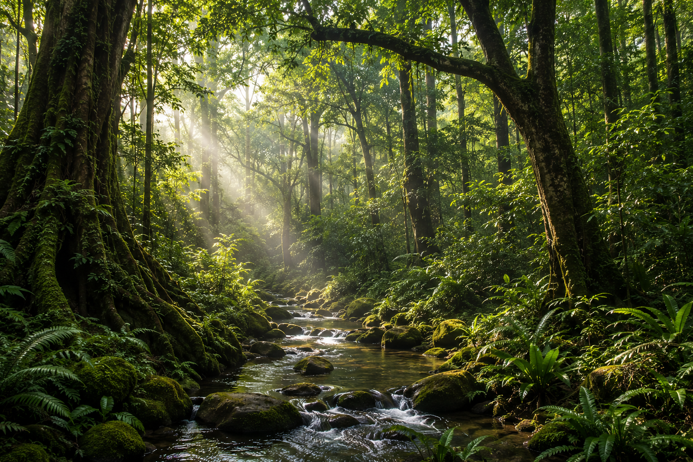
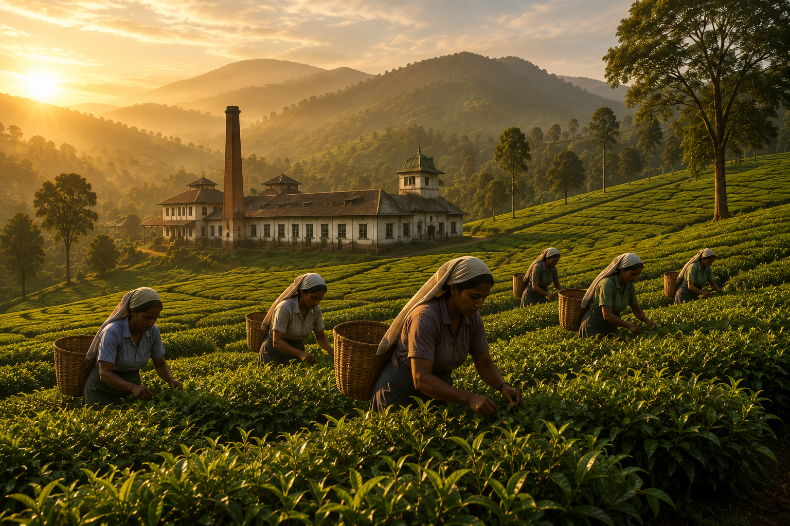
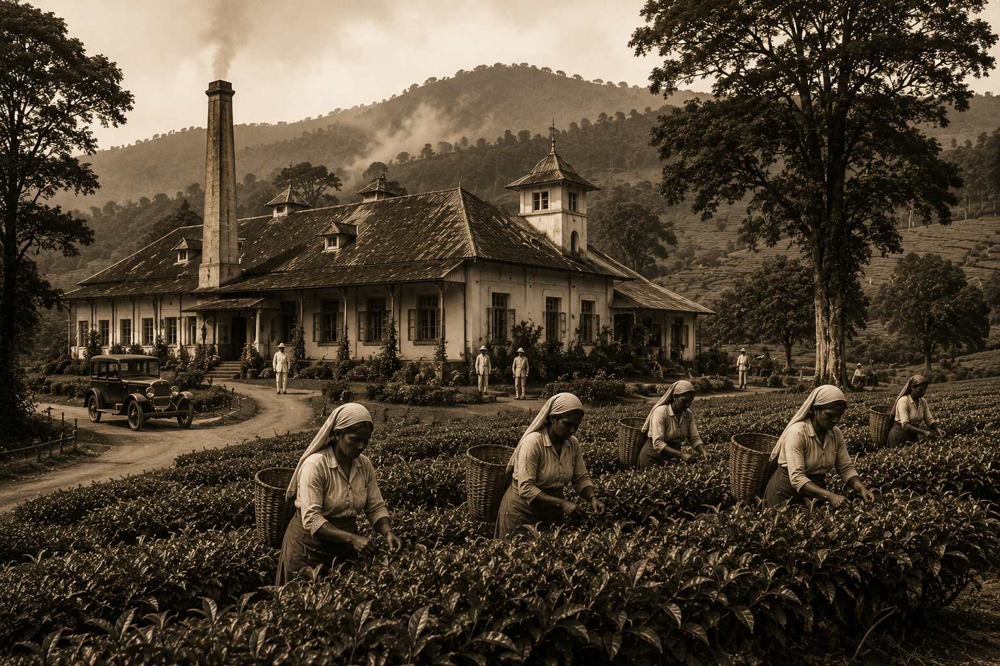
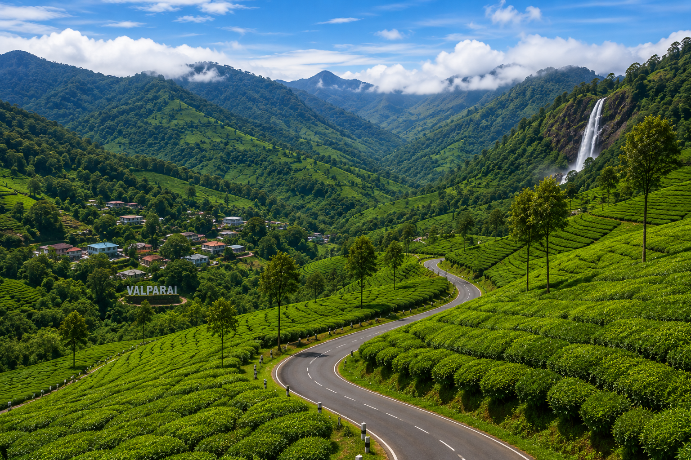

Journey through the fascinating history of Valparai, from ancient forests and indigenous tribes to British tea plantations and today's beautiful hill station.
Explore HistoryValparai is one of the most beautiful hill stations in Tamil Nadu, located in the heart of the Anamalai Hills of the Western Ghats. Long before it became famous for tea plantations, this region was covered with dense evergreen forests and was home to indigenous tribal communities living in harmony with nature.
The history of Valparai is closely connected with the magnificent Anamalai mountain ranges, rich biodiversity, heavy rainfall, wildlife and centuries-old forest ecosystems that continue to make this region unique.
Before the arrival of the British, Valparai was largely untouched forest inhabited by tribal communities such as the Malasar, Kadar and Pulayar people. Their traditional knowledge of forests, medicinal plants and wildlife formed an important part of the region's cultural heritage.
The evergreen forests of Valparai are part of one of the world's richest biodiversity hotspots, supporting elephants, lion-tailed macaques, gaurs, leopards, hornbills and countless endemic plant species.
Dense evergreen forests covered the entire Valparai region. Indigenous communities such as the Malasar and Kadar lived in harmony with nature for generations.
British explorers entered the Anamalai Hills and began surveying the region for plantations and commercial cultivation.
Coffee plantations were established first. Later, tea cultivation expanded rapidly due to the favourable climate.
Tea estates developed across Valparai. Roads, bridges and worker settlements were established, transforming the hill station into an important plantation region.
Valparai is internationally recognised for its tea estates, biodiversity, wildlife conservation and eco-tourism while preserving its unique cultural heritage.
During the nineteenth century, British planters explored the Anamalai Hills in search of fertile land suitable for commercial plantations. The cool climate, abundant rainfall and rich soil made Valparai an ideal location for plantation agriculture.
In the early years, coffee was cultivated in several estates. However, changing agricultural conditions and the growing global demand for tea encouraged estate owners to gradually replace coffee plantations with tea gardens.
As tea cultivation expanded, roads, bridges, factories and workers' settlements were established throughout the hills. These developments transformed Valparai into one of South India's most important tea-producing regions.
Today, Valparai is known worldwide for its tea estates, breathtaking landscapes, wildlife conservation and peaceful hill station environment. The tea industry continues to play a major role in the region's economy and identity.
During the nineteenth century, the British administration began developing plantation agriculture in the Anamalai Hills. Survey teams explored the forests, identified fertile land and gradually established plantation estates.
Along with tea cultivation, roads, bridges, estate bungalows, factories and workers' settlements were developed. These changes transformed Valparai from a dense forest region into a well-known hill station and plantation centre.
The plantation economy led to the construction of transport routes, estate offices, processing factories and residential quarters. Many of these historic structures still reflect the colonial influence in Valparai.
Long before plantations were established, the forests of Valparai were home to indigenous tribal communities. These communities developed a deep understanding of the forests, wildlife and medicinal plants through generations of traditional knowledge.
The traditional lifestyle of the tribal communities was closely connected with the surrounding forests. Their customs, ecological knowledge and cultural practices remain an important part of Valparai's heritage.
Today, protecting both the natural environment and the cultural heritage of indigenous communities is essential for preserving the identity of Valparai for future generations.
Today, Valparai is one of the most peaceful and beautiful hill stations in South India. It is widely known for its tea estates, evergreen forests, rich biodiversity, wildlife conservation and eco-tourism.
Thousands of visitors travel to Valparai every year to experience its cool climate, scenic viewpoints, waterfalls, winding mountain roads and unique natural beauty.
Sustainable tourism, forest conservation and the protection of tribal heritage will play an important role in preserving Valparai for future generations.
Explore visual glimpses representing the history, tea plantations, forests and heritage of Valparai.




Valparai is famous for its tea estates, wildlife, scenic mountain landscapes, waterfalls and pleasant climate.
Indigenous tribal communities such as the Malasar and Kadar lived in the forests long before plantation agriculture was introduced.
Tea cultivation expanded during the late nineteenth century after plantation development began in the Anamalai Hills.